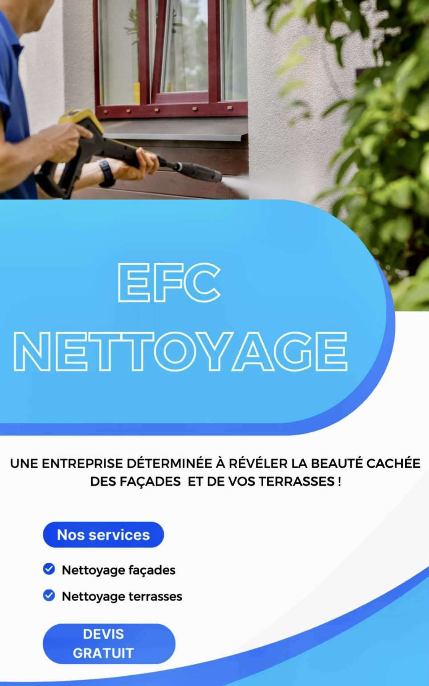

EFC Nettoyage
Découvrez nos services professionnels
Accueil
À propos
Avant-Aprés
Contactez-nous
Ce que nous proposons
✅ Nettoyage de façade haute pression
✅ Traitement anti-mousse
✅ Hydrofuge imperméabilisant
✅ Rénovation de terrasses, murets, dalles

Demander un devis